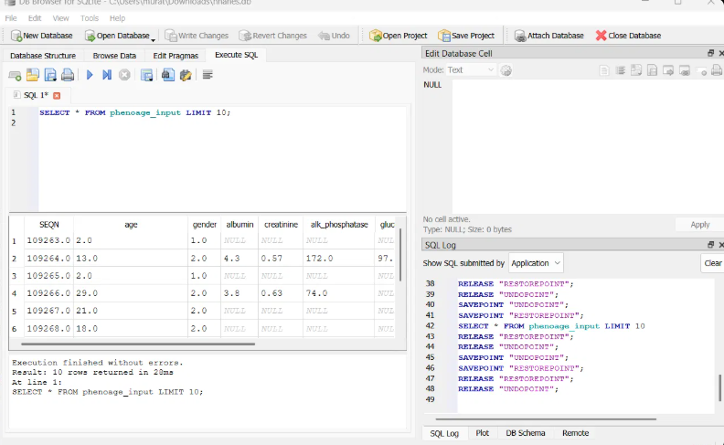
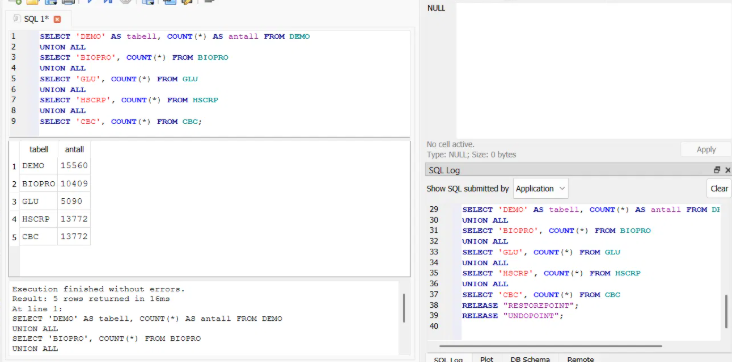
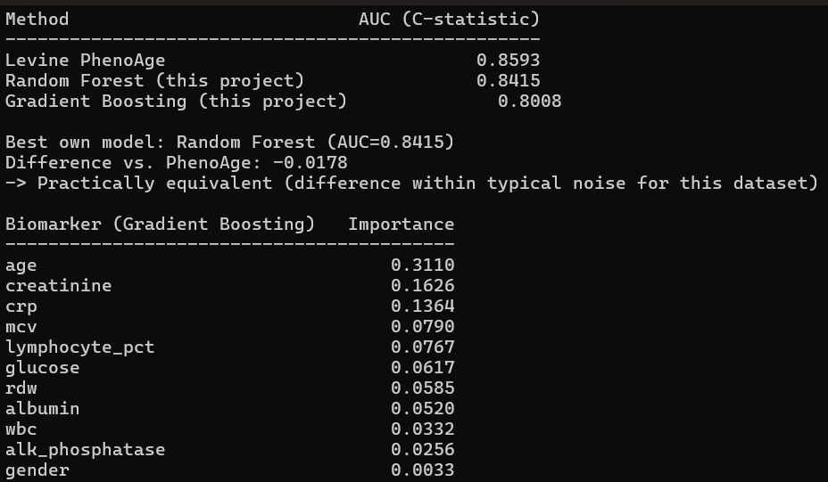

← Back to projects
Bioinformatics / SQL / Machine Learning
Biological Age Predictor & Mortality Model
A database-driven analysis of biological aging and mortality using NHANES data. SQLite was used to structure participant and biomarker data before Phenotypic Age, Random Forest and Gradient Boosting models were evaluated against recorded mortality.
Project overview
Predicting biological risk instead of chronological age.
Biological age models are often evaluated by how closely they reproduce chronological age. This project instead focuses on a clinically meaningful outcome: mortality.
NHANES demographic, laboratory and mortality data were organized into a structured SQLite workflow. The resulting biomarker dataset was used to calculate Levine's Phenotypic Age.
Random Forest and Gradient Boosting models were then evaluated against the same mortality outcome, allowing their predictive performance to be compared directly with the published Phenotypic Age model.
- Data source
- NHANES + NCHS
- Database
- SQLite
- Database interface
- DB Browser for SQLite
- Analysis
- Python
- Target
- Recorded mortality
- Evaluation metric
- ROC AUC
Database
Structuring NHANES biomarker data for analysis.
SQLite was used to inspect, organize and prepare participant-level biomarker information before the biological age and mortality analyses were performed.

01
NHANES 2015–2016
Analysis-ready biomarker data
The database contains participant-level fields including age, gender, albumin, creatinine, alkaline phosphatase and other biomarkers used throughout the analysis.
Queries against the
phenoage_input
dataset made it possible to inspect the merged
biological inputs before running the mortality
models.
SQL workflow
Inspecting and validating the source tables.

02
Data validation
Checking the imported datasets
SQL queries were used to inspect the available NHANES tables and verify the number of records available in each source before downstream analysis.
DEMO
BIOPRO
GLU
HSCRP
CBC
Model analysis
Comparing Phenotypic Age with machine learning.
Python was used to calculate Phenotypic Age and compare mortality prediction using Random Forest and Gradient Boosting.

03
Model output
Random Forest nearly matched Phenotypic Age.
The best self-built model was Random Forest, achieving an AUC of 0.8415 compared with 0.8593 for Levine's Phenotypic Age.
Gradient Boosting achieved an AUC of 0.8008.
Highest Gradient Boosting importance
Age
0.3110
Creatinine
0.1626
CRP
0.1364
Final results
Mortality prediction performance.
The final comparison shows that the self-built Random Forest achieved performance very close to the established Phenotypic Age model.

Key findings
What the project demonstrated.
Strong mortality signal
Phenotypic Age achieved an AUC of 0.8593, showing strong discrimination of the mortality outcome in the analyzed cohort.
Random Forest came close
Random Forest achieved 0.8415 AUC — a difference of only 0.0178 compared with Phenotypic Age.
Biomarkers carried useful signal
Age, creatinine and CRP received the highest feature importance in the Gradient Boosting analysis.
Real outcomes were used
The project evaluated model performance against recorded mortality rather than simply predicting chronological age.
Analysis workflow
Core project files.
nhanes_download_setup.py
NHANES data acquisition and setup.
nhanes_mortality_setup.py
Mortality dataset preparation.
calculate_phenoage.py
Phenotypic Age calculation.
calculate_phenoage_mortality.py
Phenotypic Age and mortality analysis.
compare_mortality_models.py
Machine learning model comparison.
nhanes_mortality.sqbpro
DB Browser for SQLite project file.
Project skills
Technologies demonstrated.
SQL
SQLite
Database Management
DB Browser for SQLite
Python
NHANES
Data Cleaning
Biomarker Analysis
Random Forest
Gradient Boosting
scikit-learn
ROC AUC
Source code
Explore the full analysis.
The repository contains the Python scripts and database workflow used for the NHANES biological age and mortality analysis.